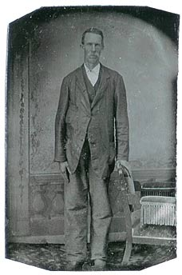
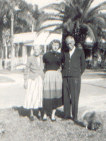

| James Henry Revis was born November 12th, 1878 in the Reim's Creek Township, Buncombe Co., NC. He took his mother's last name, and little is known about his father. |

|
|

|
James married Dellar Wheeler and together they had eight children. He died 13 September 1953 of pneumonia and was buried in Mount Olivet Cemetery. |